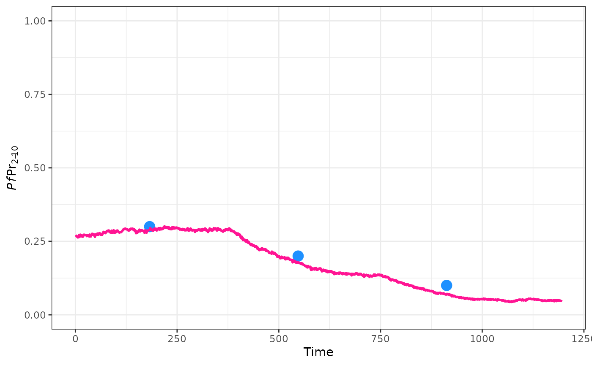
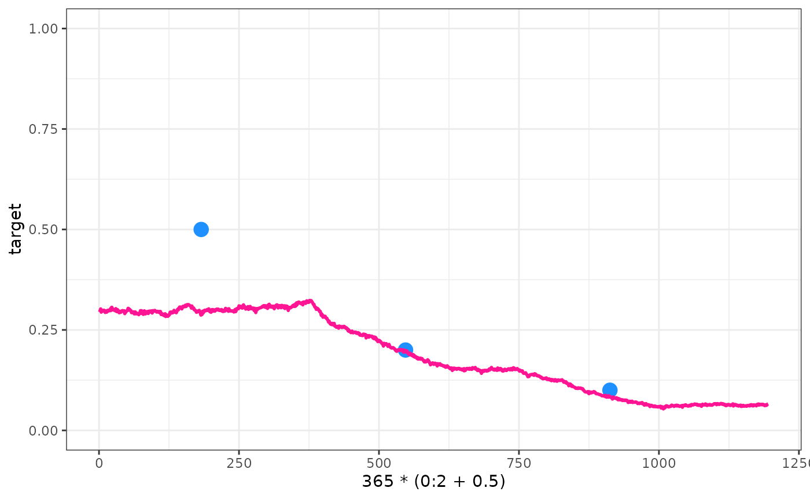

Advanced_calibration
Advanced_calibration.RmdWe’ve seen how to perform a very simple calibration. Here we will look some more advanced options. To start with lets define a new summary function, this one will produce a vector of annual average estimates of prevalence in 2-10 year olds:
annual_pfpr_summary <- function(x){
year <- ceiling(x$timestep / 365)
pfpr <- x$n_detect_730_3650 / x$n_730_3650
tapply(pfpr, year, mean)
}We can use this function to calibrate against multiple years of PfPr estimates:
target <- c(0.3, 0.2, 0.1)
parameters <- get_parameters(list(human_population = 5000, individual_mosquitoes = FALSE)) |>
set_bednets(
timesteps = 365 * 0:2,
coverages = c(0, 0.3, 0.4),
retention = 5 * 365,
dn0 = matrix(0.53, nrow = 3, ncol=1),
rn = matrix(0.56, nrow = 3, ncol=1),
rnm = matrix(0.24, nrow = 3, ncol=1),
gamman = rep(2.64 * 365, 3)
)
parameters$timesteps <- 365 * 3
set.seed(123)
out <- calibrate(parameters = parameters,
target = target,
summary_function = annual_pfpr_summary,
tolerance = 0.025,
low = 4, high = 6)
#>
#> Trying EIR: 4
#> 1 2 3
#> model_output 0.2926 0.19822 0.09221
#> target 0.3000 0.20000 0.10000
#> difference -0.0074 -0.00178 -0.00779
#> weighted_difference -0.0074 -0.00178 -0.00779
#>
#> Sum squared weighted difference: -0.005658
#> Mean absolute difference < tolerance
#>
#> Trying EIR: 6
#> 1 2 3
#> model_output 0.3385 0.2448 0.1283
#> target 0.3000 0.2000 0.1000
#> difference 0.0385 0.0448 0.0283
#> weighted_difference 0.0385 0.0448 0.0283
#>
#> Sum squared weighted difference: 0.037194
#>
#> Trying EIR: 4
#> 1 2 3
#> model_output 0.2663 0.1821 0.09142
#> target 0.3000 0.2000 0.10000
#> difference -0.0337 -0.0179 -0.00858
#> weighted_difference -0.0337 -0.0179 -0.00858
#>
#> Sum squared weighted difference: -0.020047
#> Mean absolute difference < tolerance
parameters <- set_equilibrium(parameters, init_EIR = out)
raw <- run_simulation(parameters$timesteps + 100, parameters = parameters)
raw$pfpr <- raw$n_detect_730_3650 / raw$n_730_3650
ggplot() +
geom_point(aes(x = 365 * (0:2 + 0.5), y = target), col = "dodgerblue", size = 4) +
geom_line(data = raw, aes(x = timestep, y = pfpr), col = "deeppink", size = 1) +
ylim(0, 1) +
theme_bw()
#> Warning: Using `size` aesthetic for lines was deprecated in ggplot2 3.4.0.
#> ℹ Please use `linewidth` instead.
#> This warning is displayed once every 8 hours.
#> Call `lifecycle::last_lifecycle_warnings()` to see where this warning was
#> generated.
There may be a situation where there is more evidence to support some specific target data over other. In this situation we can supply weights to bias our fitting more towards or away from certain points.
target <- c(0.5, 0.2, 0.1)
parameters <- get_parameters(list(human_population = 5000, individual_mosquitoes = FALSE)) |>
set_bednets(
timesteps = 365 * 0:2,
coverages = c(0, 0.3, 0.4),
retention = 5 * 365,
dn0 = matrix(0.53, nrow = 3, ncol=1),
rn = matrix(0.56, nrow = 3, ncol=1),
rnm = matrix(0.24, nrow = 3, ncol=1),
gamman = rep(2.64 * 365, 3)
)
parameters$timesteps <- 365 * 3
set.seed(123)
out <- calibrate(parameters = parameters,
target = target,
summary_function = annual_pfpr_summary,
tolerance = 0.025,
low = 4, high = 6,
weights = c(0.1, 1, 1))
#>
#> Trying EIR: 4
#> 1 2 3
#> model_output 0.2926 0.19822 0.09221
#> target 0.5000 0.20000 0.10000
#> difference -0.2074 -0.00178 -0.00779
#> weighted_difference -0.0207 -0.00178 -0.00779
#>
#> Sum squared weighted difference: -0.010105
#> Mean absolute difference < tolerance
#>
#> Trying EIR: 6
#> 1 2 3
#> model_output 0.3385 0.2448 0.1283
#> target 0.5000 0.2000 0.1000
#> difference -0.1615 0.0448 0.0283
#> weighted_difference -0.0162 0.0448 0.0283
#>
#> Sum squared weighted difference: 0.018984
#>
#> Trying EIR: 4
#> 1 2 3
#> model_output 0.2663 0.1821 0.09142
#> target 0.5000 0.2000 0.10000
#> difference -0.2337 -0.0179 -0.00858
#> weighted_difference -0.0234 -0.0179 -0.00858
#>
#> Sum squared weighted difference: -0.016617
#> Mean absolute difference < tolerance
parameters <- set_equilibrium(parameters, init_EIR = out)
raw <- run_simulation(parameters$timesteps + 100, parameters = parameters)
raw$pfpr <- raw$n_detect_730_3650 / raw$n_730_3650
ggplot() +
geom_point(aes(x = 365 * (0:2 + 0.5), y = target), col = "dodgerblue", size = 4) +
geom_line(data = raw, aes(x = timestep, y = pfpr), col = "deeppink", size = 1) +
ylim(0, 1) +
theme_bw()